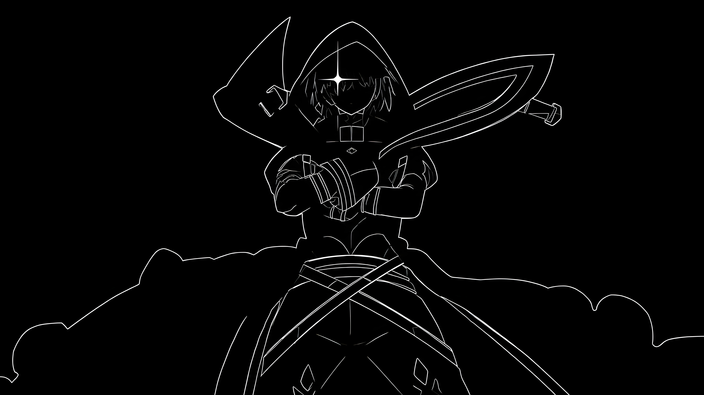

Scorpio竜
Üdvözlöm a weboldalamon.
Magamról...
Egy diák vagyok, akit érdekel a programozás, a dizájn és az önfejlesztés. Szeretek olyan dolgokat alkotni, amelyek igazán jól, hibátlanul működnek. Folyamatosan tanulok és fejlesztem magam. Jártas vagyok a HTML, a CSS és a Bootstrap használatában. Segíthetek a webfejlesztési igényeidben. Weboldal írás és dizájn/javítási szolgáltatások is rendelkezésre állnak, nyugodtan lépj velem kapcsolatba!
